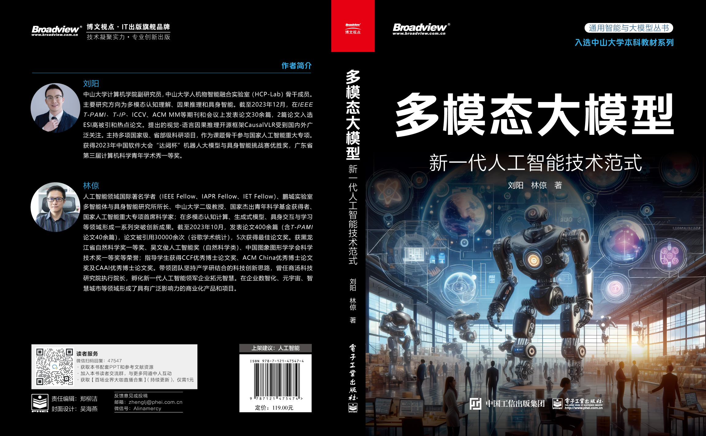
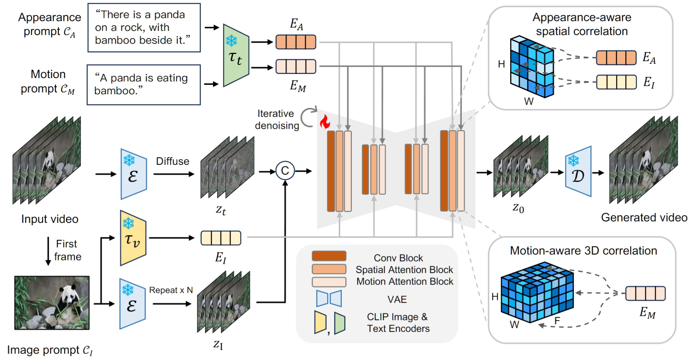
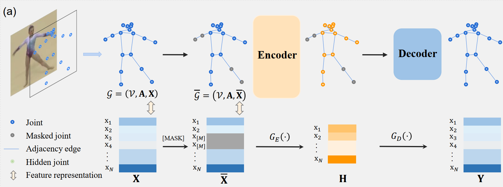

Yang Liu (刘阳)
Email: liuy856@mail.sysu.edu.cn
Office: School of Computer Science and Engineering, Sun Yat-sen University, Guangzhou, China
I am currently an associate professor at HCP Lab, School of Computer Science and Engineering,
Sun Yat-sen University. From 2019-2024, I worked as a posdoctoral fellow (research fellow) at School of Computer Science and Engineering, Sun Yat-sen University, working with Prof. Liang Lin.
I obtained my Ph.D degree of Telecommunications and Information Systems in June 2019 at Phoenix-eye (XD145) Lab, School of Telecommunications Engineering,
Xidian University, advised by Prof. Zhaoyang Lu, Prof. Jing Li and Prof. Tao Yang. I serve as the reviewer of IEEE T-PAMI, T-IP, T-NNLS, T-MM, T-CSVT, CVPR, ICCV, AAAI, ACM MM, ECCV, etc. [中文版]
Looking for self-motivated Masters, RAs, visiting students, and interns. Please drop me an email if interested.
- CCF ChinaSoft 2023 Robotic Big Model and Embodied Intelligence Challenge, Third Prize, 2023.
- The Third Guangdong Province Young Computer Science Academic Show, First Prize, 2023.
- National Scholarship for PhD Students, 2018.
- National English Competition, Third Prize, 2013.
- National Mathematical Modeling Competition, Second Prize, 2012.
News
- 2024-07: We release the paper list for Embodied AI !
- 2024-07: One paper is accepted by ACM MM 2024!
- 2024-06: The book of multimodal large model 《多模态大模型：新一代人工智能技术范式》 is selected for the Sun Yat-sen University Undergraduate Textbook Series!
- 2024-05: One first-author T-PAMI paper is selected as the ESI Hot Cited Paper!
- 2024-05: One first-author T-PAMI paper is selected as the ESI Highly Cited Paper!
- 2024-04: The book of multimodal large model 《多模态大模型：新一代人工智能技术范式》 is published!
- 2023-12: I won the third prize of CCF ChinaSoft 2023 Robotic Big Model and Embodied Intelligence Challenge!
- 2023-11: One first-author T-IP paper is selected as the ESI Hot Cited Paper!
- 2023-11: One first-author T-IP paper is selected as the ESI Highly Cited Paper!
- 2023-10: One accepted ACM MM 2023 paper is recommended as an oral!
- 2023-10: An invention patent has been granted.
- 2023-10: I have been selected as a member of the CSIG Visual Big Data Committee.
- 2023-07: One paper is accepted by ACM MM 2023!
- 2023-07: Two papers are accepted by ICCV 2023!
- 2023-06: One paper is accepted by IEEE Transactions on Pattern Analysis and Machine Intelligence!
- 2023-06: I won the first prize in the Third Guangdong Province Young Computer Science Academic Show.
- 2023-06: One paper is accepted by ICIP 2023.
- 2023-04: One paper is accepted by IJCAI 2023!
- 2023-03: The open-source framework for causal discovery and visual-linguistic reasoning Causal-VLReasoning is online!
- 2023-03: I become a member of CAAI (Chinese Association for Artificial Intelligence).
- 2023-03: I become a member of CCF (China Computer Federation).
- 2023-03: I am invited as the Program Committee (PC) Member for the Computer Graphics International (CGI) 2023.
- 2023-03: One paper is accepted by Information Sciences.
- 2022-12: One review paper about causal reasoning is reported in social media by Machine Intelligence Research.
- 2022-11: I received the funding from Guangdong Basic and Applied Basic Research Foundation 2023.
- 2022-11: One review paper for causal reasoning is published online by Machine Intelligence Research.
- 2022-11: I am invited as the Program Committee (PC) Member for the Computational Visual Media Conference 2023.
- 2022-11: I am invited as the reviewer of IEEE/CVF Conference on Computer Vision and Pattern Recognition 2023.
- 2022-09: I become a member of IEEE Industrial Electronics Society.
- 2022-08: My TCGL paper published in IEEE T-IP is invited to be exhibited as the poster in Valse 2022.
- 2022-08: One review paper about causal reasoning is accepted by Machine Intelligence Research.
- 2022-08: I am invited as the Program Committee (PC) Member for the AAAI 2023.
- 2022-06: I become a member of CSIG.
- 2022-05: One paper is accepted by IEEE Transactions on Industrial Informatics.
- 2022-04: I received the funding from Science and Technology Projects in Guangzhou.
- 2022-03: One paper is accepted by CVPR 2022 as an oral presentation.
- 2022-01: One paper is accepted by IEEE Transactions on Image Processing. Code is available.
- 2022-01: One paper is accepted by ICASSP 2022.
- 2022-01: The code for TCGL is available.
- 2021-12: I am invited as the reviewer of Chinese Conference on Pattern Recognition and Computer Vision (PRCV) 2022.
- 2021-11: I am invited as the reviewer of IEEE/CVF Conference on Computer Vision and Pattern Recognition 2022.
- 2021-10: I start working as a research associate professor at Sun-Yat-Sen University.
- 2021-05: One paper is accepted by IEEE Transactions on Image Processing. Code is available.
- 2021-04: The code for SAKDN is available.
- 2021-02: I become a Member of the IEEE.
- 2020-12: I am invitied as the reviewing expert for NSFC.
- 2020-11: I received the funding from National Natural Science Foundation of Guangdong Province of China 2021.
- 2020-09: I received the funding from National Natural Science Foundation of China 2021.
- 2020-06: I received the funding from China Postdoctoral Science Foundation 2020.
- 2020-03: I received the funding from Fundamental Research of the Central Universities 2020.
- 2020-01: My Ph.D Thesis (psw：ithd) is available now.
- 2019-10: Codes and datasets for IEEE TIP is available.
- 2019-10: One paper is accepted by IEEE Transactions on Image Processing.
- 2019-08: I start working as a postdoctoral fellow at Sun-Yat-Sen University.
- 2019-06: I obtain my Ph.D degree from Xidian University.
Open-source Framework

- CausalVLR is a python open-source framework for causal relation discovery, causal inference that implements state-of-the-art causality learning algorithms for various visual-linguistic reasoning tasks, such as VQA, embodied interaction, model robustness, medical report generation, etc.


Demos of Embodied Agents

- The robotic dog actively checks the surrounding states of extreme environments with the dark light condiction, including checking the machine states, detecting anomaly intrusion and human-robot dialog.

- We implemtent and integrate active visual sensing, visual navigation, embodied dialog, robotic manipulation and robotic arm controling algorithms into the robotic dog. The robotic dog can provide vairous services for humans in complex and dynamic environments.
- The multimodal embodied interactive agent (MEIA) can translate high-level tasks expressed in natural language into a sequence of executable actions. The MEIA can generate executable action plans based on diverse requirements and the robot's capabilities. Furthermore, we construct an embodied question answering dataset based on a dynamic virtual cafe environment with the large language model. The MEIA obtained the third prize of CCF ChinaSoft 2023 Robotic Big Model and Embodied Intelligence Challenge.
Book
- 


Selected Papers


- 


- 


arXiv:2407.06886.
|
[Paper] [Embodied AI Paper List] [机器之心中文解读] [BibTex] |


IEEE Transactions on Pattern Analysis and Machine Intelligence (T-PAMI), 2023. (ESI Highly Cited & Hot Paper)
|
[Paper] [中文解读] [Code & Dataset] [BibTex] |


arXiv:2402.00290
|
[Paper] [Code & Dataset] [BibTex] |
Submitted to TMM, arXiv, 2024
|
[Project] [Code & Dataset] [BibTex] |
arXiv:2308.11914
|
[Paper] [Code & Dataset] [BibTex] |


Arxiv, 2024.
| [Paper] [Code & Dataset] [BibTex] |


ACM International Conference on Multimedia (ACM MM), 2023. (Oral)
|
[Paper] [Code & Dataset] [BibTex] |
IEEE/CVF International Conference on Computer Vision (ICCV), 2023.
|
[Paper] [Code & Dataset] [BibTex] |


IEEE/CVF International Conference on Computer Vision (ICCV), 2023.
|
[Paper] [Code & Dataset] [BibTex] |


International Joint Conference on Artificial Intelligence (IJCAI), 2023.
|
[Paper] [Code & Dataset] [BibTex] |


IEEE Transactions on Industrial Informatics (T-II), 2023.
|
[Paper] [Code & Dataset] [BibTex] |


Information Sciences (INS), 2023.
|
[Paper] [Code & Dataset] [BibTex] |
IEEE/CVF Conference on Computer Vision and Pattern Recognition (CVPR), 2022. (Oral)
|
[Paper] [Code & Dataset] [BibTex] |


Machine Intelligence Research (MIR), 2022. (Top-10 Downloads)
|
[Paper] [Arxiv (Keep Updating)] [Video (Youtube)] [Video (BiliBili)] [中文解读] [BibTex] |


IEEE International Conference on Acoustics, Speech and Signal Processing (ICASSP), 2022.
|
[Paper] [Code & Dataset] [BibTex] |
IEEE Transactions on Image Processing (T-IP), 2022. (ESI Highly Cited & Hot Paper)
|
[Paper] [Code & Dataset] [BibTex] |


IEEE Transactions on Image Processing (T-IP), 2021.
|
[Paper] [Code & Dataset] [BibTex] |


IEEE Transactions on Image Processing (T-IP), 2020.
|
[Paper] [Code & Dataset] [BibTex] |


IEEE Transactions on Circuits and Systems for Video Technology (T-CSVT), 2019.
|
[Paper] [Code & Dataset] [BibTex] |


IEEE Signal Processing Letters (SPL), 2018.
|
[Paper] [Code & Dataset] [BibTex] |


PhD Dissertation

Academic services
-
Reviewer for Journals
- Advanced Science
- IEEE Transactions on Pattern Analysis and Machine Intelligence
- IEEE Transactions on Image Processing
- IEEE Transactions on Neural Networks and Learning Systems
- IEEE Transactions on Cybernetics
- IEEE Transactions on Multimedia
- IEEE Transactions on Circuits and Systems for Video Technology
- IEEE Transactions on Human-Machine Systems
- IEEE Transactions on Mobile Computing
- IEEE Signal Processing Letters
- IEEE Robotics and Automation Letters
- ACM Transactions on Multimedia Computing Communications and Applications
- ACM Transactions on Information Systems
- IET Computer Vision
- Pattern Recognition
- Information Fusion
- Neural Networks
- Pattern Recognition Letters
- Computer Vision and Image Understanding
- Signal Processing: Image Communication
- Machine Vision and Applications
- Journal of Visual Communication and Image Representation
- Visual Computer
-
Program Committee (PC)/Reviewer for Conferences
- IEEE/CVF Conference on Computer Vision and Pattern Recognition (CVPR)
- IEEE/CVF International Conference on Computer Vision (ICCV)
- European Conference on Computer Vision (ECCV)
- ACM Multimedia (ACM MM)
- AAAI Conference on Artificial Intelligence (AAAI)
- IEEE International Conference on Acoustics, Speech and Signal Processing (ICASSP)
- Computational Visual Media Conference (CVM)
- Computer Graphics International (CGI)
- Chinese Conference on Pattern Recognition and Computer Vision (PRCV)
- ACM international joint conference on pervasive and ubiquitous computing (UbiComp)
- IEEE International Semantic Web Conference (ISWC)
- IEEE International Symposium on Circuits and Systems (ISCAS)
- International AAAI Conference on Web and Social Media (ICWSM)
- CCF BigData Conference (CCF BigData)